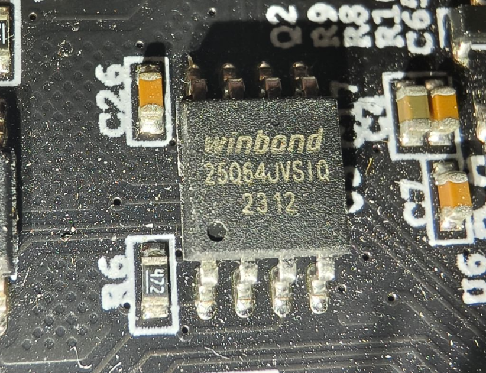
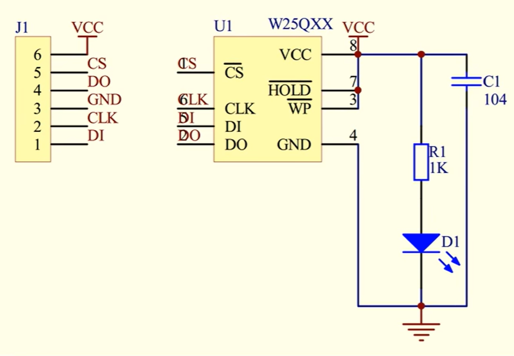

W25Qxx简介
-
W25Qxx系列是一种低成本、小型化、使用简单的非易失性存储器，常应用于数据存储、字库存储、固件程序存储等场景
-
存储介质：Nor Flash（闪存）
-
时钟频率：80MHz/160MHz(Dual SPI)/320Mhz(Quad SPI)
-
W25Qxx的存储容量为24位地址，“xx”表示了这个芯片不同的存储容量：
1 2 3 4 5 6 7W25Q40： 4Mbit / 512KByte (4Mbit = (4x1024)Kbit = (4096÷8)KByte = 512KByte) W25Q80： 8Mbit / 1MByte W25Q16： 16Mbit / 2MByte W25Q32： 32Mbit / 4MByte W25Q64： 64Mbit / 8MByte W25Q128：128Mbit / 16MByte W25Q256：256Mbit / 32MByteW25Q64接线图

| 引脚 | 功能 |
|---|---|
| VCC、GND | 电源（2.7~3.6V） |
| CS（SS） | SPI片选 |
| CLK (SCK) | SPI时钟 |
| DI (MOSI) | SPI主机输出从机输入 |
| DO (MISO | SPI主机输入从机输出 |
| WP | 写保护 |
| HOLD | 数据保持 |
硬件电路
Flash操作注意事项
写入操作时：
- 写入操作前，必须先进行写使能
- 每个数据位只能由1改写为0，不能由0改写为1
- 写入数据前必须先擦除，擦除后，所有数据位变为1
- 擦除必须按最小擦除单元进行
- 连续写入多字节时，最多写入一页的数据，超过页尾位置的数据，会回到页首覆盖写入
- 写入操作结束后，芯片进入忙状态，不响应新的读写操作
读取操作时：
- 直接调用读取时序，无需使能，无需额外操作，没有页的限制，读取操作结束后不会进入忙状态，但不能在忙状态时读取